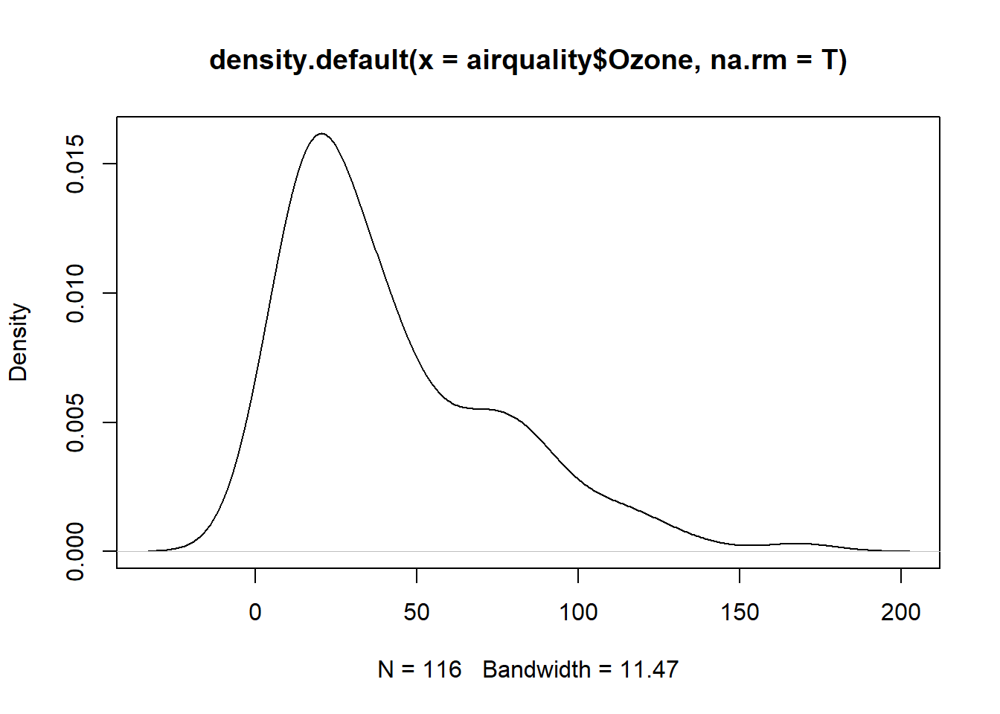
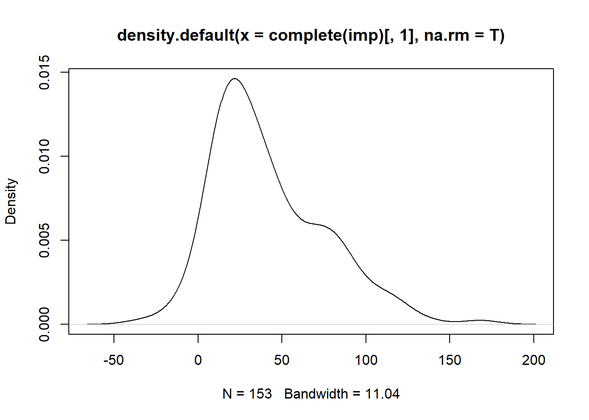

2 Modelado en Minería de datos
2.1 Explorando los datos
Existen dos aproximaciones para empezar a explorar la información existente en una base de datos:
- Resumen de los datos
- Visualización de los datos
2.1.1 Resumen de los datos
Dado el tamaño de las bases de datos resulta imposible o muy dificil conocer todas sus propiedad, el resumen de los datos intenta brindar propiedades claves de los datos, estas propiedades podrian ser:
- Cual es el valor mas comun
- Cuan variable o dispersa esta la informacion
- Existen valores extraños o inesparedaps en la base de datos
- Los datos siguen alguna distribucion
A continuación se emplea la encuesta a hogares 2018 para ir respondiendo estas preguntas.
En cuanto a los valores mas comunes, la media y la mediana de los datos son suficientes para las variables cuantitativas, mientra que para variables cualitativas, las categorias mas frecuentes son una buena opción.
load(url("https://github.com/AlvaroLimber/EST-384/raw/master/data/eh18.Rdata"))
# media de edad
mean(eh18p$s02a_03)## [1] 29.59059## [1] 26## Registered S3 method overwritten by 'quantmod':
## method from
## as.zoo.data.frame zoo## [1] "2.Mujer"## [1] "La Paz"A veces es mejor ver los resultados por grupos, por ejemplo, podemos verlo por departamento y area.
## # A tibble: 18 x 6
## # Groups: depto [9]
## depto area `mean(s02a_03)` `median(s02a_03)` `centralValue(s02a_02)` `n()`
## <fct> <fct> <dbl> <dbl> <chr> <int>
## 1 Chuquisaca Urbana 28.7 24 2.Mujer 1116
## 2 Chuquisaca Rural 31.0 27 2.Mujer 1001
## 3 La Paz Urbana 30.4 27 2.Mujer 8716
## 4 La Paz Rural 34.3 31 2.Mujer 1254
## 5 Cochabamba Urbana 30.4 27 2.Mujer 6398
## 6 Cochabamba Rural 31.1 27.5 1.Hombre 1180
## 7 Oruro Urbana 28.7 26 2.Mujer 1456
## 8 Oruro Rural 36.4 34 2.Mujer 732
## 9 Potosí Urbana 26.1 23 2.Mujer 939
## 10 Potosí Rural 35.6 34.5 2.Mujer 916
## 11 Tarija Urbana 29.4 27 2.Mujer 2170
## 12 Tarija Rural 29.7 27 2.Mujer 918
## 13 Santa Cruz Urbana 27.8 25 2.Mujer 5694
## 14 Santa Cruz Rural 29.9 26 1.Hombre 867
## 15 Beni Urbana 26.8 22 2.Mujer 1866
## 16 Beni Rural 26.0 19 1.Hombre 650
## 17 Pando Urbana 25.5 23 1.Hombre 857
## 18 Pando Rural 22.6 18 1.Hombre 787La función n() realiza un proceso de conteo.
De forma similar podemos hacer para las medidas de variabilidad, las mas comunes la desviacion estandar, el rango, el rango intercuartil y los cuantiles. Usando la eh18 para la edad y el ingreso laboral.
## [1] 20.97181## [1] 0 98## [1] 32## 0% 25% 50% 75% 100%
## 0 12 26 44 98## 10% 90%
## 5 61## [1] 2242.593## [1] 4.166667 36196.667969## [1] 2397## 0% 25% 50% 75% 100%
## 4.166667 1500.000000 2554.699951 3897.000000 36196.667969## 10% 90%
## 5 61## Urbana Rural
## Chuquisaca 2586.058 1735.306
## La Paz 2154.421 1703.794
## Cochabamba 2313.400 1654.140
## Oruro 2425.280 1622.623
## Potosí 2308.412 1534.399
## Tarija 2287.537 2142.638
## Santa Cruz 2156.938 2134.006
## Beni 2419.952 1809.108
## Pando 1778.112 2050.242## Urbana Rural
## Chuquisaca Numeric,5 Numeric,5
## La Paz Numeric,5 Numeric,5
## Cochabamba Numeric,5 Numeric,5
## Oruro Numeric,5 Numeric,5
## Potosí Numeric,5 Numeric,5
## Tarija Numeric,5 Numeric,5
## Santa Cruz Numeric,5 Numeric,5
## Beni Numeric,5 Numeric,5
## Pando Numeric,5 Numeric,5## depto area x.0% x.25% x.50% x.75%
## 1 Chuquisaca Urbana 39.583336 1317.083344 2598.000000 4369.449707
## 2 La Paz Urbana 6.666667 1732.000000 2650.000000 3897.000000
## 3 Cochabamba Urbana 80.000000 1850.833374 2700.000000 4000.000000
## 4 Oruro Urbana 15.000000 1608.679932 2598.000000 4330.000000
## 5 Potosí Urbana 160.000000 1724.750000 3064.550049 4500.000000
## 6 Tarija Urbana 86.599998 1794.533325 2814.500000 4330.000000
## 7 Santa Cruz Urbana 80.000000 2121.699951 2976.875000 4156.799805
## 8 Beni Urbana 50.000000 1729.834961 2500.000000 4105.924927
## 9 Pando Urbana 250.000000 2475.000000 3291.666748 4538.041748
## 10 Chuquisaca Rural 36.666668 519.599976 1012.489990 2078.399902
## 11 La Paz Rural 12.500000 300.000000 825.000000 2249.166748
## 12 Cochabamba Rural 23.333334 523.649994 1590.000061 2598.000000
## 13 Oruro Rural 19.166668 286.458336 653.916687 2051.324982
## 14 Potosí Rural 25.833334 225.000000 516.250000 1435.208374
## 15 Tarija Rural 4.166667 995.883316 1967.666687 3366.749939
## 16 Santa Cruz Rural 66.666672 1230.000000 2262.250000 3167.366516
## 17 Beni Rural 100.000000 705.000000 1800.000000 3500.000000
## 18 Pando Rural 80.000000 1207.500000 2167.500000 3449.133362
## x.100%
## 1 16123.333008
## 2 23437.484375
## 3 36196.667969
## 4 16166.666992
## 5 14072.500000
## 6 21833.000000
## 7 35668.664062
## 8 22700.000000
## 9 11367.666016
## 10 10120.000000
## 11 15433.333008
## 12 10825.000000
## 13 10175.500000
## 14 7333.333496
## 15 16730.000000
## 16 22465.667969
## 17 7577.500000
## 18 19750.000000Finalmente, para explorar a fondo las variables la funcion describe es bastante útil, tambien, el comando summary.
## Loading required package: lattice## Loading required package: survival## Loading required package: Formula## Loading required package: ggplot2##
## Attaching package: 'Hmisc'## The following object is masked from 'package:ape':
##
## zoom## The following objects are masked from 'package:dplyr':
##
## src, summarize## The following objects are masked from 'package:base':
##
## format.pval, units## eh18p[, 1:5]
##
## 5 Variables 37517 Observations
## -------------------------------------------------------------------------------------
## folio
## n missing distinct
## 37517 0 11195
##
## lowest : 111-00419704629-A-0011 111-00419704629-A-0021 111-00419704629-A-0041 111-00419704629-A-0051 111-00419704629-A-0071
## highest: 953-11761951198-D-0081 953-11761951198-D-0091 953-11761951198-D-0101 953-11761951198-D-0111 953-11761951198-D-0121
## -------------------------------------------------------------------------------------
## nro
## n missing distinct Info Mean Gmd .05 .10 .25
## 37517 0 13 0.948 2.639 1.712 1 1 1
## .50 .75 .90 .95
## 2 4 5 6
##
## lowest : 1 2 3 4 5, highest: 9 10 11 12 13
##
## Value 1 2 3 4 5 6 7 8 9 10 11 12
## Frequency 11195 9399 7215 4892 2654 1230 536 231 110 39 13 2
## Proportion 0.298 0.251 0.192 0.130 0.071 0.033 0.014 0.006 0.003 0.001 0.000 0.000
##
## Value 13
## Frequency 1
## Proportion 0.000
## -------------------------------------------------------------------------------------
## depto
## n missing distinct
## 37517 0 9
##
## lowest : Chuquisaca La Paz Cochabamba Oruro Potosí
## highest: Potosí Tarija Santa Cruz Beni Pando
##
## Value Chuquisaca La Paz Cochabamba Oruro Potosí Tarija
## Frequency 2117 9970 7578 2188 1855 3088
## Proportion 0.056 0.266 0.202 0.058 0.049 0.082
##
## Value Santa Cruz Beni Pando
## Frequency 6561 2516 1644
## Proportion 0.175 0.067 0.044
## -------------------------------------------------------------------------------------
## area
## n missing distinct
## 37517 0 2
##
## Value Urbana Rural
## Frequency 29212 8305
## Proportion 0.779 0.221
## -------------------------------------------------------------------------------------
## s02a_02
## n missing distinct
## 37517 0 2
##
## Value 1.Hombre 2.Mujer
## Frequency 18419 19098
## Proportion 0.491 0.509
## -------------------------------------------------------------------------------------## Min. 1st Qu. Median Mean 3rd Qu. Max. NA's
## 4.17 1500.00 2554.70 2959.39 3897.00 36196.67 22852## eh18p$area: Urbana
## ylab p0 s02a_03
## Min. : 6.67 No Pobre:21225 Min. : 0.00
## 1st Qu.: 1839.08 Pobre : 7971 1st Qu.:13.00
## Median : 2788.52 NA's : 16 Median :26.00
## Mean : 3238.21 Mean :29.17
## 3rd Qu.: 4082.50 3rd Qu.:43.00
## Max. :36196.67 Max. :98.00
## NA's :17573
## ---------------------------------------------------------------
## eh18p$area: Rural
## ylab p0 s02a_03
## Min. : 4.167 No Pobre:4049 Min. : 0.00
## 1st Qu.: 476.392 Pobre :4254 1st Qu.:11.00
## Median : 1300.000 NA's : 2 Median :27.00
## Mean : 1886.938 Mean :31.06
## 3rd Qu.: 2657.667 3rd Qu.:49.00
## Max. :22465.668 Max. :98.00
## NA's :52792.1.2 Visualización
La visualizacion es una herramienta importante para explorar y entender la base de datos. Los seres humanos son excelentes para capturar patrones visuales, y la visualización de datos intenta capitalizar en estas habilidades. Es util diferenciar las visualizaciones por:
- Una sola varibles
- Dos variables
- Multiples variables
Los aspetor vinculados al uso de graficos de origen de R y la libreria ggplot pueden verse en el texto guia de EST-183 “BigData”. A continuación se introducen de forma directa funciones en R orientadas a la visualización univariante, bivariante y multivariante.
Usando al EH-2018, para variables cualitativas.
#GGPLOT
library(ggplot2)
ggplot(eh18p,aes(x=s03a_01a))+geom_bar()+ggtitle("Dónde vivia hace 5 años?")
Para variables del tipo cuantitativas

## null device
## 1## Warning: Removed 22852 rows containing non-finite values (stat_boxplot).## `stat_bin()` using `bins = 30`. Pick better value with `binwidth`.## Warning: Removed 22852 rows containing non-finite values (stat_bin).Si ahora queremos comparar usar ambas variables cuanti y cuali

## Warning: Removed 22852 rows containing non-finite values (stat_boxplot).
## Warning: Removed 22852 rows containing non-finite values (stat_ydensity).
Usando ambas variables cuantitativas


#pairs(eh18p[,c("ylab","tothrs","aestudio")]) similar al anterior
library(GGally)
ggpairs(eh18p,columns = c("ylab","tothrs","aestudio"))
library(ggridges)
# basic example
ggplot(eh18p[eh18p$s02a_03>=15,], aes(x = ylab, y = s02a_02, fill = s02a_02)) +
geom_density_ridges() +
theme_ridges() +
theme(legend.position = "none")+
ggtitle("Ingreso laboral por sexo, personas de 15 años o más")
Ahora si combinamos variables cuanti y cuali con ggpairs.

Alternativas Multivariantes,
#trabajando a partir de una muestra de 100 individuos
s<-sample(1:dim(eh18p)[1],100)
i<-match(c("s02a_03","aestudio","ylab","tothrs"),names(eh18p))
ggparcoord(eh18p[s,],columns = i,groupColumn = "area",boxplot=T)
##
## Attaching package: 'TeachingDemos'## The following objects are masked from 'package:Hmisc':
##
## cnvrt.coords, subplot
2.2 Componentes Principales
El método de Análisis de Componentes Principales se ocupa de explicar la estructura de varianza y covarianza de un grupo de variables a través de unas pocas combinaciones lineales de este grupo de variables. En general sus objetivos son (1) la reducción de los datos y (2) la interpretación.
Algebráicamente, los componentes principales son combinaciones lineales de \(p\) variables aleatorias \(X_1\), \(X_2\), , \(X_p\). Geométricamente, estas combinaciones lineales representan la selección de un nuevo sistema de coordenadas obtenido por rotación de del sistema original con \(X_1\), \(X_2\), , \(X_p\) como los ejes de coordenadas. Los nuevos ejes representan la dirección con la máxima variabilidad y provee una simple y más parsimoniosa descripción de la estructura de la covarianza.
Los componentes principales dependen únicamente de la matriz de covarianza \(\Sigma\) o la matriz de correlaciones \(\rho\) (Matriz estandarizada de \(\Sigma\)) de \(X_1\), \(X_2\), , \(X_p\). Su desarrollo no requiere de ningún supuesto de normalidad multivariada, sin embargo, componentes principales derivados de poblaciones normales multivariantes tienen un gran uso en la interpretación en términos de elipsoide de densidad constante.
Sea la matriz \(\mathbf{X}\) compuesta de \(p\) vectores aleatorios \(\mathbf{X}=[X_1, X_2, \ldots, X_p ]\) que tiene la matriz de covarianza \(\Sigma\) con valores propios \(\lambda_1 \geq \lambda_2 \geq \ldots \geq \lambda_p \geq 0\).
Considere la combinación lineal:
\[\begin{equation} \begin{array}{rrr} Y_1 = & a_1^{'} \mathbf{X} = & a_{11} X_1 + a_{12} X_2 + \ldots a_{1p} X_p \\ Y_2 = & a_2^{'} \mathbf{X} = & a_{21} X_1 + a_{22} X_2 + \ldots a_{2p} X_p\\ \vdots = & \vdots & \vdots \\ Y_p = & a_p^{'} \mathbf{X} = & a_{p1} X_1 + a_{p2} X_2 + \ldots a_{pp} X_p\\ \end{array} \label{cp1} \end{equation}\]
Equivalente a:
\[\begin{equation} \mathbf{Y}= \left[ \begin{array}{c} Y_1\\ Y_2\\ \vdots\\ Y_p\\ \end{array} \right] = \left[ \begin{array}{cccc} a_{11} & a_{12} & \ldots & a_{1p} \\ a_{21} & a_{22} & \ldots & a_{2p} \\ \vdots & \vdots & \ddots & \vdots \\ a_{21} & a_{p2} & \ldots & a_{pp} \\ \end{array} \right] \left[ \begin{array}{c} X_1\\ X_2\\ \vdots\\ X_p\\ \end{array} \right] = \mathbf{A X} \label{cp2} \end{equation}\]
La combinación lineal \(\mathbf{Y}=\mathbf{AX}\) tiene:
\[\begin{equation} \mu_y=E(\mathbf{Y})=E(\mathbf{AX})=A \mu_x \label{cp3} \end{equation}\]
\[\begin{equation} \Sigma_y=Cov(\mathbf{Y})=Cov(\mathbf{AX})=A \Sigma A^{'} \label{cp4} \end{equation}\]
En base a , se obtiene:
\[\begin{equation} Var(Y_i)=a_i^{'} \Sigma a_i \quad i=1, 2, \ldots, p \label{cp5} \end{equation}\]
\[\begin{equation} Cov(Y_i,Y_k)=a_i^{'} \Sigma a_k \quad i,k=1, 2, \ldots, p \label{cp6} \end{equation}\]
Los componentes principales son combinaciones lineales incorrelacionadas, tal que es lo más grande posible.
El primer componente principal es la combinación lineal con máxima varianza. Entonces se debe maximizar \(Var(Y_1)=a_1^{'} \Sigma a_1\). Es claro que \(Var(Y_1)\) puede ser incrementada multiplicando a \(a_1\) por alguna constante. Para eliminar esta indeterminación, es conveniente restringir los coeficientes del vector. Por lo tanto se define.
\[ \begin{array}{rcl} \text{Primer componente principal} & = & \text{Combinacion lineal} \quad a_1^{'}X \quad \text{que maximiza} \\ & & Var(a_1^{'}X) \quad \text{sujeto a} \quad a_1^{'} a_1=1\\ \text{Segundo componente principal} & = & \text{Combinacion lineal} \quad a_2^{'}X \quad \text{que maximiza} \\ & & Var(a_2^{'}X) \quad \text{sujeto a} \quad a_2^{'} a_2=1 \quad y \\ & & Cov(a_1^{'}X,a_2^{'}X)=0 \end{array} \]
Para el \(i-esimo\) paso:
\[ \begin{array}{rcl} i-esimo \text{ componente principal} & = & \text{Combinacion lineal} \quad a_i^{'}X \quad \text{que maximiza} \\ & & Var(a_i^{'}X) \quad \text{sujeto a} \quad a_i^{'} a_i=1 \quad y \\ & & Cov(a_i^{'}X,a_k^{'}X)=0 \quad para \quad k<i \end{array} \]
Los pasos sugeridos para iniciar el analisis de componentes principales son:
- Identificar las variables de interés dentro de la matriz de datos, si las variables tienen las mismas escalas se recomienda emplear la matriz de covarianza, si las escalas son diferentes, se recomienda trabajar con la matriz de correlaciones.
- Obtener los componentes principales, los eigen valores y la matriz de eigen vectores
- Eliminar las variables rebundantes, se sugiere identificar las variables del conjunto de datos correlacionadas con los últimos componentes
- Calcular nuevamente los componentes principales expluyendo las variables identificadas en el paso previo
- Elegir el número de componentes a retener (scree plot, tamaño de los eigen valores, etc)
- Analizar los resultados
#1. Seleccione una base de datos de interés del repositorio
load(url("https://github.com/AlvaroLimber/EST-384/blob/master/data/oct20.RData?raw=true"))
#2. Seleccione las variables para el PCA (Según la motivación)
vv<-c(14:22,24,25)
#2A TRANFORMAR
vval<-apply(computo[,vv],1,sum)
aux<-computo[,vv]/vval
#2B LIMPIEZA
#3. Calcule el PCA
aux1<-na.omit(aux)
cp1<-eigen(cov(aux1))
cp2<-eigen(cor(aux1))
#4. Identifique el número de CPs que explican hasta el 90% de la varianza
cumsum(cp1$values)/sum(cp1$values) ## [1] 0.6437488 0.8650934 0.9435882 0.9722772 0.9839750 0.9903314 0.9952079 0.9977119
## [9] 0.9991579 1.0000000 1.0000000## [1] 0.2060107 0.3791103 0.4915437 0.5920446 0.6774866 0.7601857 0.8319256 0.8991550
## [9] 0.9562490 1.0000000 1.0000000#5. Identifique las variables correlacionadas con la cantidad de
#componentes fuera del 90% del paso anterior
cp11cov<-as.matrix(aux1)%*%cp1$vectors[,11]
cp11cor<-as.matrix(aux1)%*%cp2$vectors[,11]
cor(cbind(aux1,cp11cov,cp11cor))[1:11,12:13]## cp11cov cp11cor
## CC 0.53979440 -0.30842297
## FPV -0.55376059 0.21633850
## MTS 0.13333915 0.40515623
## UCS -0.34677314 0.35428285
## MAS - IPSP -0.21854796 -0.41971569
## 21F -0.38433159 0.53263368
## PDC -0.12174043 -0.01216537
## MNR -0.21628303 0.41542663
## PAN-BOL 0.11710134 0.09577694
## Blancos -0.07666553 0.50453525
## Nulos -0.11039942 0.18712933## [1] 0.6443329 0.8658697 0.9444240 0.9730984 0.9847943 0.9911498 0.9960295 0.9984949
## [9] 0.9999206 1.0000000cp10cov<-as.matrix(aux1[,-2])%*%cp11$vectors[,10]
#6. Calcule nuevamente el componente principal eliminando las variables rebundantes
#7. Determine la cantidad de componentes principales a retener
cp1cov<-as.matrix(aux1[,-2])%*%cp11$vectors[,1]
cp2cov<-as.matrix(aux1[,-2])%*%cp11$vectors[,2]
plot(cp1cov,cp2cov)
## cp1cov cp2cov
## CC 0.92113465 0.35759774
## FPV -0.08074887 -0.10802564
## MTS -0.16786500 -0.30855895
## UCS 0.14139049 -0.22216012
## MAS - IPSP -0.92337643 0.36777758
## 21F 0.32455320 -0.47209833
## PDC -0.09883288 0.43937850
## MNR 0.19561852 -0.25724983
## PAN-BOL 0.04776390 -0.01901819
## Blancos -0.17330606 -0.88168972
## Nulos -0.08874645 0.06391096bd<-cbind(aux1,cp1cov,cp2cov)
names(bd)[5]<-"MAS"
#9. Modele un modelo lineal empleando los CPs retenidos.
summary(lm(MAS~cp1cov,data=bd))##
## Call:
## lm(formula = MAS ~ cp1cov, data = bd)
##
## Residuals:
## Min 1Q Median 3Q Max
## -0.39544 -0.05881 0.01417 0.06187 0.16168
##
## Coefficients:
## Estimate Std. Error t value Pr(>|t|)
## (Intercept) 0.3407735 0.0003141 1085.0 <2e-16 ***
## cp1cov -0.7053686 0.0011240 -627.5 <2e-16 ***
## ---
## Signif. codes: 0 '***' 0.001 '**' 0.01 '*' 0.05 '.' 0.1 ' ' 1
##
## Residual standard error: 0.07868 on 68069 degrees of freedom
## Multiple R-squared: 0.8526, Adjusted R-squared: 0.8526
## F-statistic: 3.938e+05 on 1 and 68069 DF, p-value: < 2.2e-162.3 Análisis de correspondencia
El analisis de correspondencia esta orientado a encontrar relaciones entre las categorias de variables cualitativas.
Esta técnica es un método visual que va más alla del test de independencia Chi-cuadrado.
Para resumir la teoría, primero divida la matriz de datos \(I × J\), denotada por \(N\), por su gran total \(n\) para obtener la llamada matriz de correspondencia \(P = N / n\). Deje que los totales marginales de fila y columna de \(P\) sean los vectores \(r\) y \(c\) respectivamente, es decir, los vectores de masas de fila y columna, y \(Dr\) y \(Dc\) sean las matrices diagonales de estas matrices. El algoritmo computacional para obtener coordenadas de los perfiles de fila y columna con respecto a los ejes principales, usando el SVD, es el siguiente:
- Calcular la matriz de residuos estadarizados: \(S=D_r^{-1/2}(P-rc^t)D_c^{-1/2}\)
- Calcular la descomposición SVD de \(S\): \(S=UD_{\alpha}V^t\), donde \(U^T U=V^T V=I\)
- Coordenadas principales de filas: \(F=D_r^{-1/2} U D_{\alpha}\)
- Coordenadas principales de columnas: \(G=D_c^{-1/2} V D_{\alpha}\)
- Coordenadas estándar de filas: \(X=D_r^{-1/2} U\)
- Coordenadas estándar de columnas: \(Y=D_c^{-1/2} V\)
- Calcular la Inercia: \[\phi^2=\sum_i^I\sum_j^J{\frac{(p_{ij}-r_i c_j)^2}{r_i c_j}}\]
- Graficar las coordenadas de F y G según la la inercia contenida en la matriz \(D_{\alpha}\)
En R, existe la libreria ca que permite acceder a las coordenadas del método de correspondencia.
#ejemplo CA
#install.packages("ca")
library(dplyr)
library(ca)
data("smoke")
model<-ca(smoke)
plot(model)
## [1] "sv" "nd" "rownames" "rowmass" "rowdist" "rowinertia"
## [7] "rowcoord" "rowsup" "colnames" "colmass" "coldist" "colinertia"
## [13] "colcoord" "colsup" "N" "call"##
## Principal inertias (eigenvalues):
##
## dim value % cum% scree plot
## 1 0.074759 87.8 87.8 **********************
## 2 0.010017 11.8 99.5 ***
## 3 0.000414 0.5 100.0
## -------- -----
## Total: 0.085190 100.0
##
##
## Rows:
## name mass qlt inr k=1 cor ctr k=2 cor ctr
## 1 | SM | 57 893 31 | -66 92 3 | -194 800 214 |
## 2 | JM | 93 991 139 | 259 526 84 | -243 465 551 |
## 3 | SE | 264 1000 450 | -381 999 512 | -11 1 3 |
## 4 | JE | 456 1000 308 | 233 942 331 | 58 58 152 |
## 5 | SC | 130 999 71 | -201 865 70 | 79 133 81 |
##
## Columns:
## name mass qlt inr k=1 cor ctr k=2 cor ctr
## 1 | none | 316 1000 577 | -393 994 654 | -30 6 29 |
## 2 | lght | 233 984 83 | 99 327 31 | 141 657 463 |
## 3 | medm | 321 983 148 | 196 982 166 | 7 1 2 |
## 4 | hevy | 130 995 192 | 294 684 150 | -198 310 506 |#ejemplo ENDSA
load(url("https://github.com/AlvaroLimber/EST-384/raw/master/data/endsa.RData"))
ll<-attributes(endsa)
ll$var.labels## [1] "Cluster"
## [2] "Departamento"
## [3] "Área"
## [4] "Año"
## [5] "Edad"
## [6] "Sexo"
## [7] "Nivel de educación"
## [8] "Años de educación en el ciclo"
## [9] "Total de años de educación"
## [10] "Alfabetismo"
## [11] "Lee periodicos o revistas en la semana?"
## [12] "Escucha radio en la semana"
## [13] "Mira televisión en la semana"
## [14] "Índice de riqueza"
## [15] "Fuma"
## [16] "Conocimiento de algun método anticonceptivo"
## [17] "Uso de algún método anticonceptivo"
## [18] "Conocimiento del periodo fertil"
## [19] "Método comunmente usado"
## [20] "Edad al momento de la esterilización"
## [21] "A oido del sida?"
## [22] "Conoce maneras de evitar el VIH SIDA"
## [23] "Estado civil actual"
## [24] "Edad al primer matrimonio"
## [25] "Edad a la primera relación sexual"
## [26] "Número de uniones"
## [27] "Total de niños nacidos"
## [28] "Hijos en casa"
## [29] "Hijas en casa"
## [30] "Hijos en otro lugar"
## [31] "Hijas en otro lugar"
## [32] "Hijos que han muerto"
## [33] "Hijas que han muerto"
## [34] "Edad al primer nacimiento"
## [35] "A oido hablar de la tuberculosis o tb"
## [36] "Mantendría en secreto si alguien de su familia tuviera tb"
## [37] "Número ideal de niños"
## [38] "Número ideal de hijos"
## [39] "Número ideal de hijas"
## [40] "Nivel de educación de la pareja"
## [41] "Años de educación en el ciclo (de la pareja)"
## [42] "Ocupación de la pareja"
## [43] "Actualmente trabaja?"
## [44] "Educación en años simples de la pareja"
## [45] "Ocupación"
## [46] "Trabajó en los ultimos 12 meses"
## [47] "Edad de la pareja"
## [48] "Regularidad del trabajo"
## [49] "Quién decide como gastar el dinero?"
## [50] "(Psi) Acusan de ser infiel"
## [51] "(Psi) Limitan contacto con su familia"
## [52] "(PSI) Expresiones ofensivas"
## [53] "(PSI) Amenaza con irse "
## [54] "(PSI) Amenaza con no cumplir responsabilidad economica"
## [55] "(Fis) Empujado jaloneado"
## [56] "(Fis) Golpeado con mano o pie"
## [57] "(Fis) Golpeado con objeto duro"
## [58] "(Fis) Tratado de estrangular"
## [59] "(Fis) Forzado a tener relaciones"
## [60] ""
## [61] "Factor de expansión"t1<-endsa %>% filter(year==2008) %>% select(7,14) %>% table()
t1<-t1[1:4,]
#test chi2
chisq.test(t1)##
## Pearson's Chi-squared test
##
## data: t1
## X-squared = 8367.8, df = 12, p-value < 2.2e-16##
## Principal inertias (eigenvalues):
## 1 2 3
## Value 0.323708 0.038805 0.001415
## Percentage 88.95% 10.66% 0.39%
##
##
## Rows:
## Sin educación Con educación primaria Con educación secundaria
## Mass 0.036794 0.397860 0.366807
## ChiDist 0.999518 0.564015 0.326543
## Inertia 0.036758 0.126564 0.039113
## Dim. 1 -1.589674 -0.986443 0.406081
## Dim. 2 1.986439 0.251096 -1.168372
## Con educación superior
## Mass 0.198539
## ChiDist 0.901890
## Inertia 0.161492
## Dim. 1 1.521130
## Dim. 2 1.287294
##
##
## Columns:
## Más pobre Pobre Clase media Rico Más rico
## Mass 0.168964 0.177837 0.198713 0.218066 0.236420
## ChiDist 0.869550 0.471835 0.232894 0.323342 0.830339
## Inertia 0.127757 0.039591 0.010778 0.022799 0.163003
## Dim. 1 -1.460754 -0.818013 -0.185957 0.436418 1.413047
## Dim. 2 1.281961 -0.168562 -1.053040 -1.037739 1.052869
#programando el ca
lcol<-colnames(t1)
lrow<-rownames(t1)
P<-prop.table(t1)
r<-margin.table(P,1)
c<-margin.table(P,2)
Dr<-diag(r)
Dc<-diag(c)
##Paso 1
P-r%*%t(c)## ae08
## ae01 Más pobre Pobre Clase media Rico
## Sin educación 0.012441006 0.002372467 -0.001657500 -0.005240036
## Con educación primaria 0.057509375 0.035321601 0.003921918 -0.027698479
## Con educación secundaria -0.038100566 -0.011824251 0.014659135 0.028348987
## Con educación superior -0.031849815 -0.025869816 -0.016923553 0.004589529
## ae08
## ae01 Más rico
## Sin educación -0.007915937
## Con educación primaria -0.069054414
## Con educación secundaria 0.006916695
## Con educación superior 0.070053656## [,1] [,2] [,3] [,4] [,5]
## [1,] NaN NaN NaN NaN NaN
## [2,] NaN NaN NaN NaN NaN
## [3,] NaN NaN NaN NaN NaN
## [4,] NaN NaN NaN NaN NaN# corrigiendo el problema
S<-diag(r^(-0.5))%*%(P-r%*%t(c))%*% diag(c^(-0.5))
# 2 descomposición SVD
svd(S)## $d
## [1] 5.689533e-01 1.969900e-01 3.761651e-02 8.641056e-17
##
## $u
## [,1] [,2] [,3] [,4]
## [1,] -0.3049268 0.3810330 0.8514926 0.1918171
## [2,] -0.6222107 0.1583814 -0.4357855 0.6307616
## [3,] 0.2459415 -0.7076197 0.2682905 0.6056462
## [4,] 0.6777804 0.5735882 -0.1143309 0.4455768
##
## $v
## [,1] [,2] [,3] [,4]
## [1,] -0.60044732 0.52695380 0.43904427 -0.4084045
## [2,] -0.34496166 -0.07108381 -0.78620333 -0.3924945
## [3,] -0.08289454 -0.46941592 0.04584658 -0.5165641
## [4,] 0.20379664 -0.48459901 0.41307289 -0.4090435
## [5,] 0.68706615 0.51193680 -0.12803642 -0.4949736## [,1] [,2] [,3] [,4]
## [1,] 1.000000e+00 1.942890e-16 -8.326673e-17 -5.551115e-17
## [2,] 1.942890e-16 1.000000e+00 -1.110223e-16 5.551115e-17
## [3,] -8.326673e-17 -1.110223e-16 1.000000e+00 1.665335e-16
## [4,] -5.551115e-17 5.551115e-17 1.665335e-16 1.000000e+00## [,1] [,2] [,3] [,4]
## [1,] 1.000000e+00 2.220446e-16 2.081668e-16 5.551115e-17
## [2,] 2.220446e-16 1.000000e+00 2.914335e-16 5.551115e-17
## [3,] 2.081668e-16 2.914335e-16 1.000000e+00 8.326673e-17
## [4,] 5.551115e-17 5.551115e-17 8.326673e-17 1.000000e+00## [,1] [,2] [,3] [,4] [,5]
## [1,] 0.1577867 0.02932932 -0.01938445 -0.05849955 -0.08487368
## [2,] 0.2218072 0.13278970 0.01394827 -0.09403647 -0.22515639
## [3,] -0.1530435 -0.04629605 0.05429710 0.10023611 0.02348755
## [4,] -0.1738948 -0.13767657 -0.08520326 0.02205724 0.32334513## [,1] [,2] [,3] [,4] [,5]
## [1,] 0.1577867 0.02932932 -0.01938445 -0.05849955 -0.08487368
## [2,] 0.2218072 0.13278970 0.01394827 -0.09403647 -0.22515639
## [3,] -0.1530435 -0.04629605 0.05429710 0.10023611 0.02348755
## [4,] -0.1738948 -0.13767657 -0.08520326 0.02205724 0.32334513# 3 Coordenadas principales filas
FF<- diag(r^(-0.5)) %*% U %*% Da
# 4 Coordenadas principales columnas
G<- diag(c^(-0.5)) %*% V %*% Da
# 5 Coordenadas estandar filas
X<- diag(r^(-0.5)) %*% U
# 6 Coordenadas estandar columnas
Y<- diag(c^(-0.5)) %*% V
# 7 inercia
sum(((P-r%*%t(c))**2)/(r%*%t(c)))## [1] 0.3639279#graficando
xmin<-min(c(FF[,1],G[,1]))
xmax<-max(c(FF[,1],G[,1]))
ymin<-min(c(FF[,2],G[,2]))
ymax<-max(c(FF[,2],G[,2]))
plot(FF[,1],FF[,2],col="red",xlim=c(xmin,xmax)*1.5,ylim=c(ymin,ymax)*1.1)
points(G[,1],G[,2],col="blue")
abline(h=0,v=0,lty=2)
#incluyendo el texto
plot(FF[,1],FF[,2],xlim=c(xmin,xmax)*1.5,ylim=c(ymin,ymax)*1.1,type = "n")
text(FF[,1],FF[,2],labels = lrow,col="red",cex=0.7)
text(G[,1],G[,2],labels = lcol,col="blue",cex=0.7)
abline(h=0,v=0,lty=2)
#incluyendo mas información
plot(FF[,1],FF[,2],xlim=c(xmin,xmax)*1.5,ylim=c(ymin,ymax)*1.1,type = "n")
text(FF[,1],FF[,2],labels = lrow,col="red",cex=0.5+r*2)
text(G[,1],G[,2],labels = lcol,col="blue",cex=0.5+c*2)
abline(h=0,v=0,lty=2)
#viendo solo una dimensión
plot(rep(0,dim(FF)[1]),FF[,1],type = "n", axes = F)
axis(2)
text(rep(0,dim(FF)[1]),FF[,1],labels = lrow,col="red",cex=0.5+r*2)
text(rep(0,dim(G)[1]),G[,1],labels = lcol,col="blue",cex=0.5+c*2)
abline(h=0,v=0,lty=2)